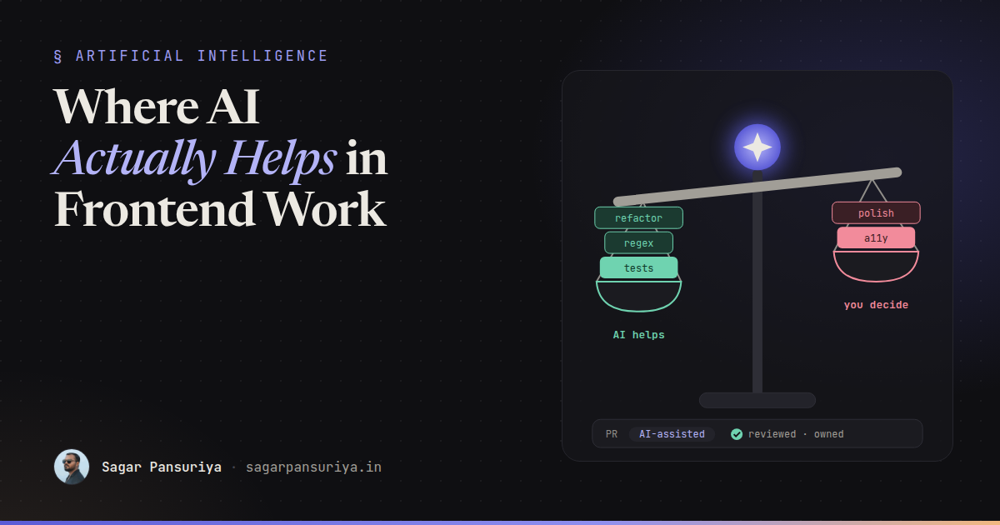
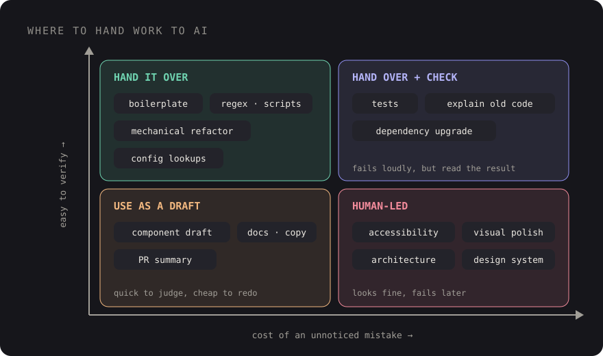

Where AI Actually Helps in Frontend Work (and Where It Doesn't)


You've probably had both of these days in the same week. On Tuesday an AI assistant writes a tidy Pest test suite for a form in four minutes, catches an edge case you'd missed, and you feel like you've hired a colleague. On Thursday it produces a pricing card that is technically correct, visually off by a dozen small decisions, uses a colour that isn't in your palette, and hides the focus ring. Fixing it takes longer than building it would have.
Both days are real, and the useful skill isn't deciding whether AI is good or bad at frontend. It's knowing in advance which kind of day a task is going to be. This is my honest map of that, from using AI tools in day-to-day frontend work and reviewing AI-assisted pull requests. It's opinion, not data. I don't have benchmarks for your codebase, and neither does anyone selling you a tool.
The one question that predicts the outcome
For any task, ask: how quickly can I tell if the output is wrong, and how much does it cost if I don't notice?

Tasks where wrong output fails loudly (a test goes red, the code doesn't compile, the regex doesn't match) are where AI shines, because the feedback loop catches its mistakes for you. Tasks where wrong output looks fine (a subtle contrast failure, a component API that'll hurt in six months, a spacing value that's almost right) are where it quietly costs you, because nothing tells you it's wrong until much later.
Where it genuinely helps
Boilerplate and the second through tenth instance of a pattern
Form requests, resource classes, Livewire component skeletons, migration and factory pairs, a new Blade component that follows the shape of three existing ones. Once a pattern exists in the codebase, AI is very good at repeating it. Point it at the existing example and it will match naming, structure and conventions more consistently than a tired human on a Friday.
The first instance of a pattern is different. That's a design decision, and I'd rather a person makes it.
Tests
This is probably my favourite use. Describe the behaviour, point it at the component, and ask for tests including edge cases. It's good at thinking of the empty state, the validation failure and the unauthorized user. Tests are also self-checking: they either pass for the right reason or they don't.
The one thing to watch: tests written after reading the implementation tend to assert what the code does, not what it should do. If the code has a bug, you can end up with a test that locks the bug in. Read the assertions, not just the green tick.
Mechanical refactors
Renaming a prop across forty components, converting a set of Alpine components from inline
x-data objects to Alpine.data() registrations, migrating class names after a
Tailwind upgrade, moving from one date library to another. Tedious, low-judgement, easy to verify with a diff
and a test run. Ideal work to hand over.
Regex, one-off scripts and awkward syntax
Regular expressions, a shell one-liner to find every {!! !!} in the views, a
clamp() calculation, a tricky CSS selector, a Vite config option you use once a year. Things you
could work out, but that would cost twenty minutes of documentation. Always ask for a few test inputs
alongside the regex, and actually run them.
Explaining unfamiliar code
Joining a project with a five-year-old jQuery layer, or reading a library's source to understand a bug. Asking "what does this file do, and what calls it?" gets you oriented much faster. Treat the explanation as a hypothesis to confirm, not a fact, because it will sometimes describe what the code looks like it does rather than what it actually does.
First drafts: components, docs, copy
A first pass at a component, a README section, a PR description, an error message. The value is getting past the blank page. The draft is rarely the final version, and that's fine. Editing is faster than writing.
Where it still falls short
Visual polish
AI can produce a layout that matches a description. It struggles with the last ten percent that makes an interface feel considered: optical alignment, rhythm between sections, how a component behaves at the awkward width between breakpoints, whether a hover state feels right. Even tools that can look at a screenshot tend to say "looks good" about things a designer would flag immediately. You still need eyes on the rendered result, at several widths.
Accessibility nuance
It knows the rules. It'll add aria-labels and alt text. But it often adds ARIA
where native HTML would be better, writes alt text that describes the image instead of its
purpose, forgets focus management when a modal closes, or builds a custom dropdown when a native
<select> or <dialog> would do. The output passes a quick glance and fails a
keyboard-only pass. That's exactly the "looks fine, costs a lot" quadrant.
My rule: AI-generated UI gets the same manual keyboard and screen reader check as anything else, no exceptions.
Architecture decisions
Should this be a Livewire component or an Alpine one? Does this state belong in the URL, the session or a store? Is it time to split this package? AI will answer confidently, and the answer will sound reasonable. But it doesn't know your team's skills, your deployment constraints, the feature coming next quarter, or the reason the last attempt at this was rolled back. Use it to list options and trade-offs, then decide as a team.
Design system consistency
Left alone, AI reaches for the most common pattern it has seen, not the one in your design system. You get
bg-blue-600 instead of your bg-primary token, a new button variant instead of the
existing one, a hard-coded 16px instead of the spacing scale. Each instance is small. Over months,
they add up to a design system that exists in Figma and nowhere else.
Context files help a lot here: tell the tool which components and tokens exist and that it must use them. I wrote about that side of it in prompting AI coding agents like a tech lead. But it's still something reviewers need to actively check.
A quick reference
| Task | Hand it over? | What you still check |
|---|---|---|
| Boilerplate following an existing pattern | Yes | Naming, file placement |
| Tests for existing behaviour | Yes | Assertions match intent, not implementation |
| Mechanical refactor | Yes | The diff, the test run |
| Regex, scripts, config | Yes | Run it against real inputs |
| First draft of a component | As a draft | Tokens, states, keyboard, widths |
| Accessibility fixes | With care | Manual keyboard and screen reader pass |
| Visual polish | Rarely | Everything, in a browser |
| Architecture choices | For options only | The decision stays with the team |
Setting team norms as a tech lead
Individual developers will work out their own habits. The tech lead's job is to make sure those habits add up to a codebase that stays coherent and a team that keeps learning. These are the norms I'd put in writing.
1. You own what you commit
"The AI wrote it" is not an explanation in code review. If you can't explain why a line is there, it isn't ready for review. This one rule covers most of the risk.
2. Say when a PR is substantially AI-generated
Not as a confession, just as context. Reviewers read AI-generated code differently: they look harder for plausible-but-wrong logic, unused code, and invented helpers that don't exist in your codebase. A simple checkbox in the PR template is enough.
3. Keep AI PRs small
It's easy to generate a 1,500-line diff in ten minutes. It's not possible to review one properly in ten minutes. The same size limits apply whether a human or a tool wrote the code. If anything, they matter more.
4. Review for the "looks fine" failures
Add a few AI-specific items to your review checklist: uses existing components and tokens, no new dependencies without discussion, keyboard-tested, no duplicated helpers, error states handled. My general approach to reviews is in frontend code reviews that teach; these items slot straight into it.
5. Protect the learning of junior developers
A junior developer who accepts every suggestion ships features but doesn't build judgement. I'd encourage juniors to write the first version of unfamiliar things themselves, then use AI to review or improve it, and to always be able to explain the result. Pairing sessions where you talk through an AI suggestion together are some of the most useful teaching moments you'll get.
6. Be clear about data
Decide, in writing, which tools are approved and what can't be pasted into them: client credentials, production data, anything covered by a contract. People will use these tools regardless; a clear policy is better than an unspoken one.
The takeaway
- Hand over work that fails loudly: boilerplate, tests, refactors, regex, scripts.
- Use drafts for the blank-page problem, then edit like you mean it.
- Keep humans firmly on visual polish, accessibility, architecture and design system consistency.
- Norms beat rules: ownership, disclosure, small PRs, AI-aware review, protected learning, clear data policy.
AI hasn't changed what good frontend work looks like. It has changed how fast you can produce work that looks good. The gap between those two is where a team's standards, and a tech lead's attention, matter most.
Discussion